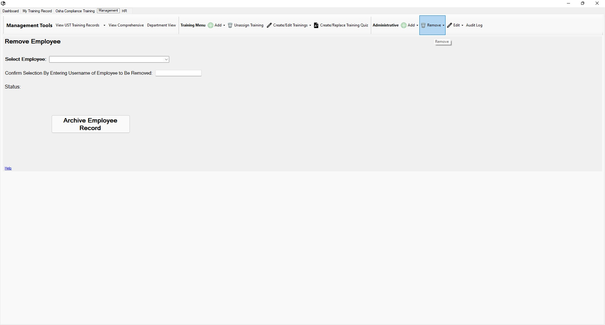

Return to Main Menu
Remove an Employee
The Remove Employee page can be accessed via the "Administrative" section of the "Management Tools" toolbar under the "Remove" dropdown.
Removing an employee will archive the employee. Their comprehensive training record will still be available in the Comprehensive Record Viewer Page.

Instructions:
Removing an Employee
-
Navigate to the Remove Employee page.
-
Select an employee to remove.
-
Confirm your selection by entering the username of the employee you wish to remove.
-
Press the "Archive Employee Record" button.